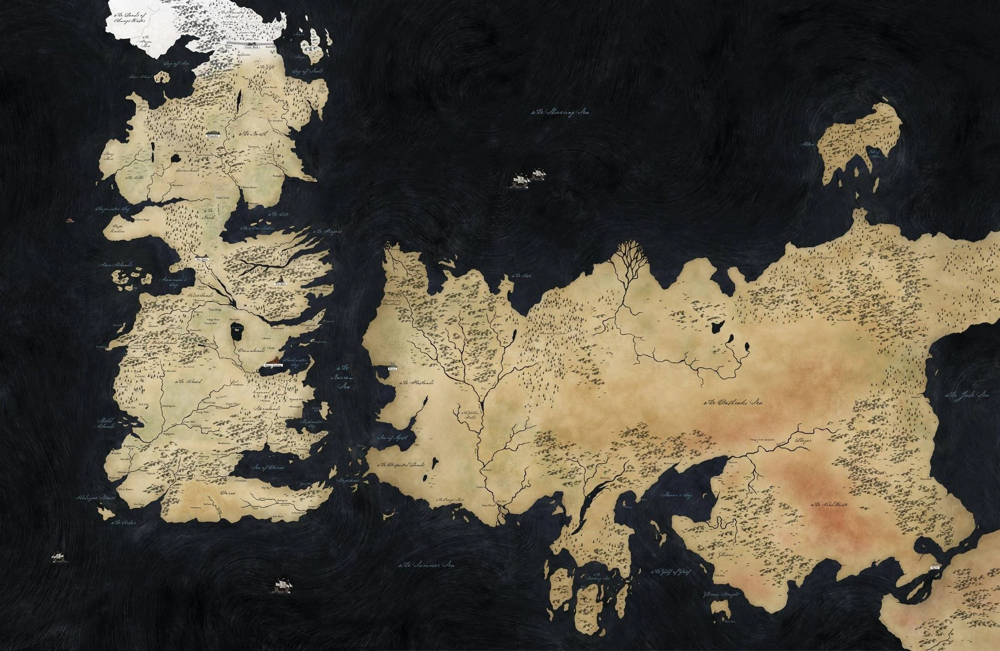

Welcome, devoted fans of Westeros and beyond! Step into a world where dragons soar over ancient castles, where honor and ambition clash in the halls of kings and queens, and where every choice can tip the balance of kingdoms. Here, the fire of the Targaryens meets the icy resolve of the North, and every story—whether whispered in taverns or shouted across battlefields—carries the weight of history. Whether you pledge loyalty to a noble house, dream of dragons in the skies, or simply marvel at the intrigue that binds the Known World together, you've found your place among those who cherish the legends of ice and fire.

The maps of Game of Thrones and House of the Dragon unveil the sprawling, intricate world of Westeros and its surrounding lands—a realm shaped by politics, war, and legend. From the icy expanse of the North and the towering Wall to the sun-drenched shores of Dorne, each region is steeped in history and defined by its house's influence. The continents are dotted with formidable castles, bustling cities, and treacherous forests, while the seas carry fleets, trade, and the threat of invaders. In House of the Dragon, the focus often shifts to Dragonstone and King's Landing, highlighting the ancestral seats of House Targaryen, yet the map still reminds us of the larger political web spanning the Known World. Every river, mountain, and coastline tells a story of conquest, loyalty, and ambition, making the maps not just tools for navigation, but gateways into the epic saga of ice, fire, and dragons.